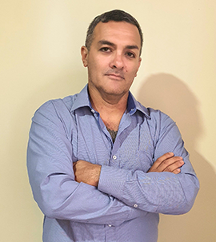

I seek challenging opportunities where I can learn and grow with achievements and obtain a position in a professional environment, where my skills are valued and can benefit the organization.
- Education
-
Business and Administration. 1994. College Tena city. Tena – Ecuador.
Lifeguard. 2002. International Red Cross. Barcelona – Spain.
Software Development. Instituto Superior Tecnológico Tena. – 2019. Studying. Tena – Ecuador.
Training of trainers. Registry.MDT-3106-CCL-221770. Senescyt.
- Skills
-
Computer skills
Excel-Word- Power Point (Microsoft Office) advanced, Outlook, Linux advanced, Telephone System Maintenance and repair services.
Languages
Spanish (Native), English (Advanced).
- Experience
-
- Ecuadorian Red Cross. - volunteer since 1987.
- Heavy Equipment Operator and trainer for new employees, 2006 – 2008. Kerite Company. Connecticut. USA.
- Sales Assistant. Inventory management. Assistant supervisor. 2007 – 2009. The Stop and Shop.
- Supervisor. 2009 – 2010. The Shop Rite.
- Remote assistant. Technical support. 2010 – 2011. The A&G Associates.
- Assistant supervisor. Production coordinator. 2011 – 2012. ACCEL INTERNATIONAL.
- Manager. 2013 – 2016. PAKARINA CAFETERIA. Archidona – Ecuador.
- Manager. 2016 – 2020. Owner of SERVICIOS INTEGRALES “OK”
- Additional qualifications
- SEMINAR of telephones equipment and technical service – June 2017. Cali – Colombia.
- SEMINAR of Basic Software for telephones. - August 2017. Bogota Colombia.
- SEMINAR of software for Smartphones. - October 2017. Bogota – Colombia.
- SEMINAR of mobile network security - December 2017 – February 2018. Bogota – Colombia.
- SEMINAR Hilde Weilbaver Empathy towards old people. 2019
- SEMINAR of WASH. - Ecuatorian Red Cross. March 2020
- References
- Franco Narvaez: Manger of Comercial Danielitos – Archidona - 0988349805
- Lucia Martinez: President of Red Cross – Napo - 0987484913